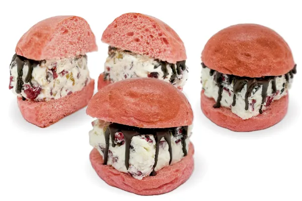
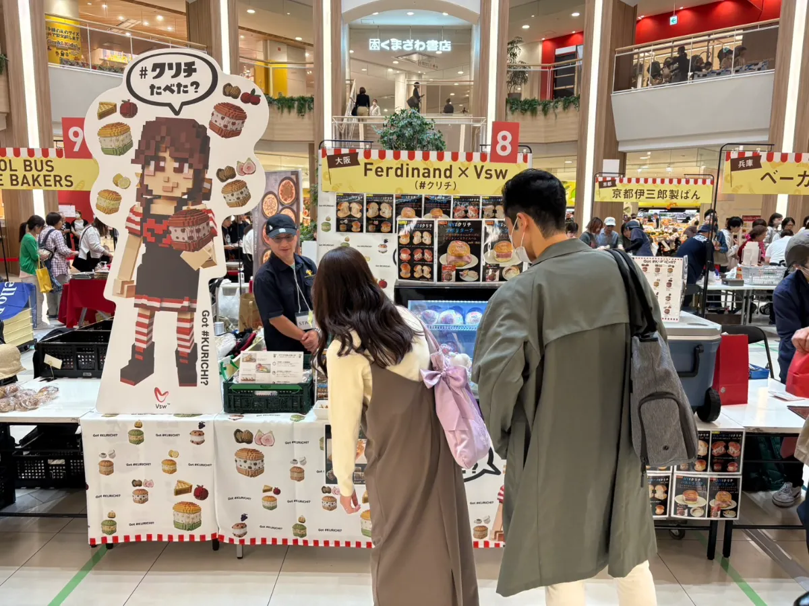

The Sandboxで広がる「#クリチ」の可能性✨

こんにちは！Vsw株式会社のマーケティング担当TOMです。今回は、Vsw社のメタバース担当である如月工房さんに、The Sandboxを活用した「クリチランド」の魅力と、これからのメタバース活用について詳しくお話を伺いました。
バーチャル空間における新しい可能性を模索する私たちの挑戦を、ぜひご覧ください！🚀✨
📖 この記事はこんな人におすすめ！
- メタバースに興味がある人🌐
- The Sandboxの活用方法を知りたい人🎮
- Vsw社のクリチランドが気になっている人🍔🧀
- 新しいブランド体験を探している人💡
- Web3時代のマーケティングを学びたい人🚀
🎮 The Sandboxとクリチランドの可能性

TOM： 如月さん、The Sandboxを使ったクリチランド、とても楽しみにしています！まずはThe Sandboxを選んだ理由を教えてください。
如月さん： The Sandboxは、ユーザーが自由にコンテンツを作れるメタバース空間で、世界中のクリエイターやブランドが参加しています。私たちは、クリチのブランド世界を自由に表現できるプラットフォームとして、The Sandboxを選びました。voxel artの独特な表現と、誰もがアクセスしやすい仕組みが魅力です。🌍
TOM： クリチランドでは、どんな体験が楽しめますか？
如月さん： ニューヨークの街並みを再現したワールド内で、プレイヤーがクリチを探したり、クリチちゃんと記念撮影ができたり、ミニゲームを楽しめる設計になっています。バーチャル空間ながら、実際のお店に来たようなワクワク感を大切にしています。📸
🌐 メタバースがブランドにもたらす価値

TOM： メタバースでブランド体験を提供する意義を、どのように考えていますか？
如月さん： 実店舗では限られた人しか来られない。でもメタバースなら、世界中の誰もが「#クリチ」の世界に触れられます。しかも、体験した人がSNSでシェアすれば、それがまたブランド認知につながります。リアルとバーチャルの循環を生み出せるのが、メタバースの一番の強みだと思います。🔄
TOM： Web3との連携についてはいかがですか？
如月さん： NFTや独自トークンを使った体験もこれから拡張していきます。プレイヤーがクリチランドで獲得したアイテムが、実店舗でのクーポンになる——そんな仕組みも検討中です。🚀
✨ これからのクリチランドが目指すもの
クリチランドは、単なる広告空間ではなく、「遊んで楽しい」「知って得する」「つい誰かに教えたくなる」体験の場を目指しています。ニューヨーク発・大阪生まれのブランドストーリーを、voxelの世界で世界中の人々に届けたい——それが私たちの願いです。
これからも、如月工房さんと一緒に、新しいメタバース体験を作り上げていきます。ぜひ応援よろしくお願いいたします！💛
執筆：Vsw株式会社 マーケティング担当 TOM 🍔🐾